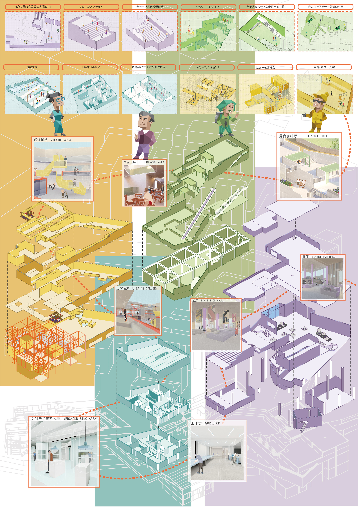
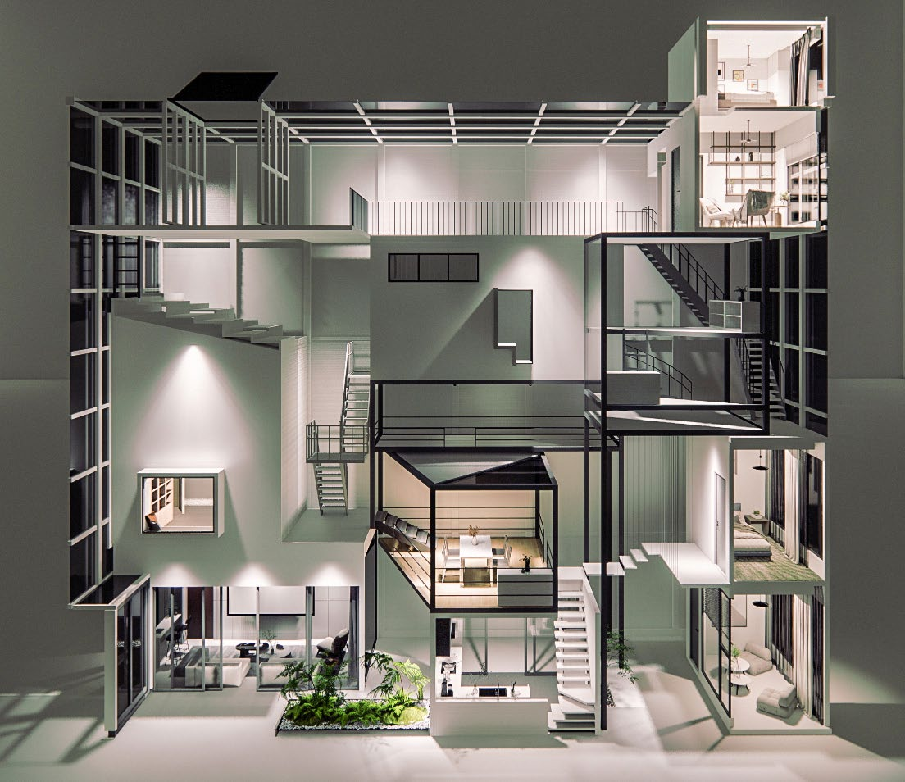
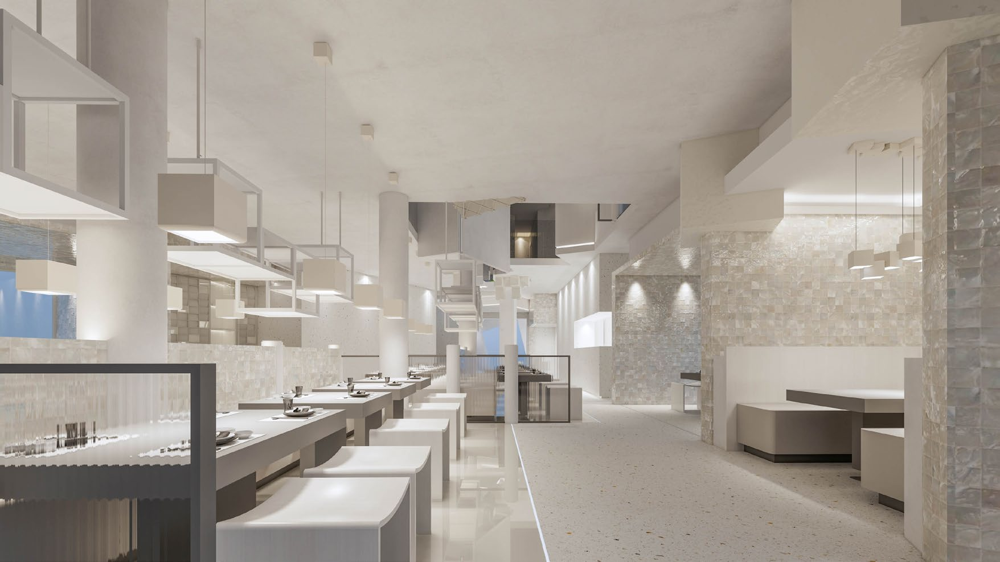
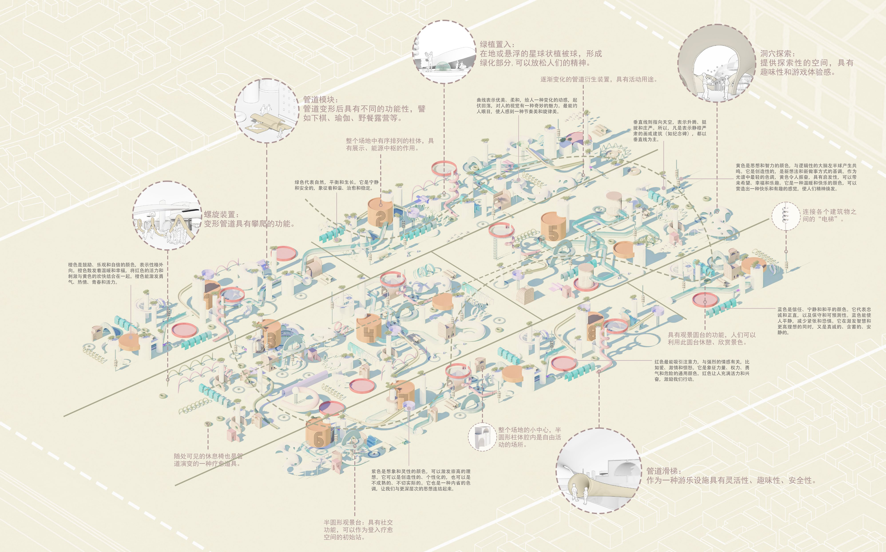
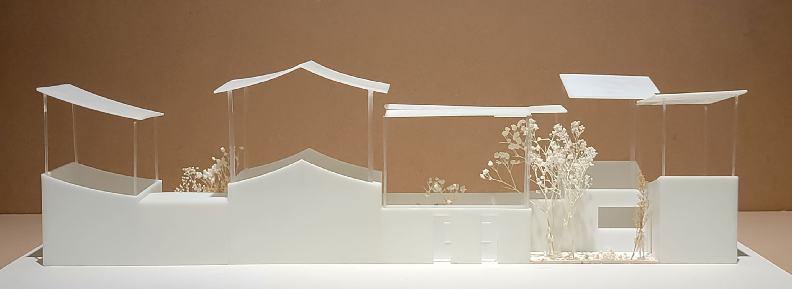
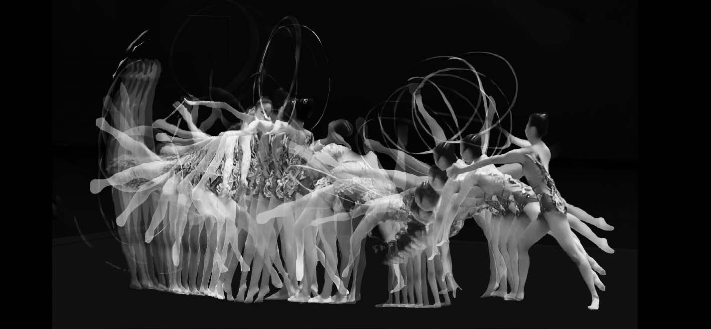

2024.9 至今
Master
南京艺术学院
室内建筑与人文景观设计方向
Hi, I’m Livia, an interior architecture & humanistic landscape design student.
室内建筑与人文景观设计方向研究生
以空间叙事、行为分析与设计实验回应当代生活中的情感、社交与体验问题。
个人档案
我目前就读于南京艺术学院，研究方向为室内建筑与人文景观设计。本科阶段学习环境设计与室内设计，长期关注空间形式、使用行为、材料氛围与文化叙事之间的关系。
我的设计实践涵盖疗愈空间、微居住空间、餐饮空间、虚拟展示空间、空间装置与手工模型等类型。相比单纯追求视觉效果，我更关注设计概念如何转化为空间结构、动线组织、材料语言和体验氛围，并尝试在作品中建立清晰的逻辑表达。
室内建筑与人文景观设计方向
环境设计专业，室内设计方向
关注室内尺度、建筑界面、景观系统与人的体验之间的连续关系。
关注空间如何通过路径、场景、材料、光线和视觉秩序组织人的感知经验。
关注空间中的情绪调节、身份认同、社交关系与沉浸式体验。
关注体块生成、模块组合、空间层次与功能复合之间的关系。
精选作品
Portfolio Index / Built Projects

IMAGE PENDINGHealing Space Designed by Barnum’s Psychological Effect
项目从快节奏社会中的心理压力与情感需求出发，将 MBTI 流行心理学与空间叙事结合，尝试构建一场寻找自我、获得身份认同与情感共鸣的空间体验。

IMAGE PENDINGFuture Micro-Living Space Design / BOX IN THE BOX
项目以单身青年居住需求为对象，通过错落堆叠的盒子单元组织个人空间与公共空间，在有限尺度中探索私密性、交流性与空间层次之间的平衡。

IMAGE PENDINGDining Space Design Based on Sea Salt Culture / 盐韵空间
项目以盐城海盐文化为切入点，提取海盐晶体的形态、结构和半透明质感，通过重复、叠加、旋转等方式转化为空间构成、材料语言与就餐氛围。

IMAGE PENDINGVirtual Healing Display Space Based on Pipeline Elements
项目以“管道”作为主要连接构件，从平面构成到三维形体生成，结合绿植、色彩与线性路径组织，构建轻松、平和、具有未来感的虚拟疗愈空间。

IMAGE PENDINGPhysical Model Works
展示通过实体模型进行空间关系、体块组织与场景氛围推敲的过程，体现从概念到空间实体的转译能力。

IMAGE PENDINGBody and Space
项目以身体动作为切入点，分析动作变化形成的曲线、路径和面，将身体动态转化为三维空间中的结构形态，探索身体与空间之间的内在联系。
获奖经历
软件技能